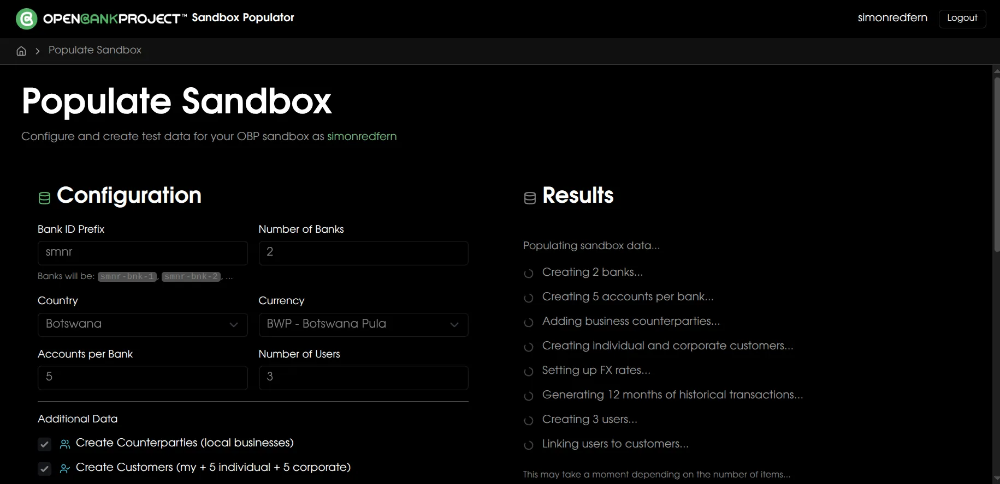

From empty to ready
- Log inWith your own OBP account. Every record is created with your login and your Roles.
- ChooseHow many banks and accounts, which country, and which kinds of record to create.
- PopulateBanks, customers, accounts and their transaction history appear in OBP-API.
- CheckSee what was created, with links to each record in API Explorer.
Watch it work
Choose a country and how much to create, and follow each step as banks, accounts, customers, FX rates and a year of transactions appear.
Sandbox Populator

What it creates
- Banks and accountsAs many as you need, with the currency of the country you choose
- CustomersPersonal and corporate, linked to their accounts
- Transaction historyPayments with business names and patterns that look like the real thing
- Counterparties and FX ratesWho the accounts pay, and the rates between currencies
- UsersTest users to log in with and give consent
- Your own dataImport banks, accounts, customers and transactions from CSV files
Made for
- Regulatory sandboxesGive every participant the same realistic data from the first day
- DevelopersBuild against accounts and transactions that behave like a bank's
- DemosShow a bank its own market, with local names and currency, in minutes
- Country data setsBotswana, Singapore and more, each with its own businesses and customers
Run it
- One imageThe obp-sandbox-populator Docker image, with Redis for sessions
- Remembers your choicesBank prefix, country and currency are kept in your OBP personal data
- SvelteKitSvelte 5 and TypeScript, in the OBP-Frontend repository
- Open sourceAGPL, with commercial licences from TESOBE
More apps
Where developers sign up, get an API key, read the guides and make their first call.
Every endpoint documented, with the Roles it needs, and callable from the page.
Where bank staff manage users, Roles, consumers and data, and watch the platform live.